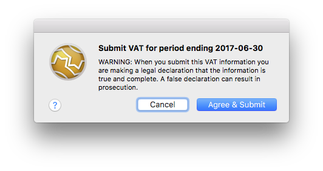
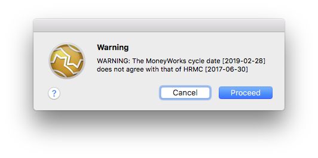
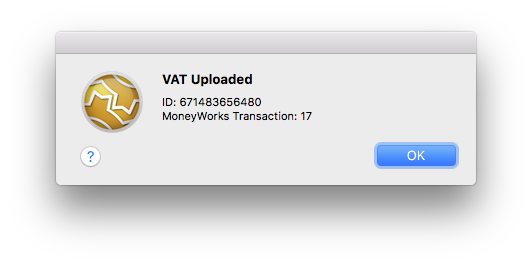
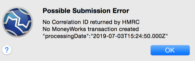
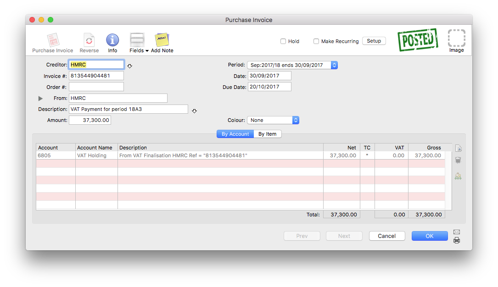
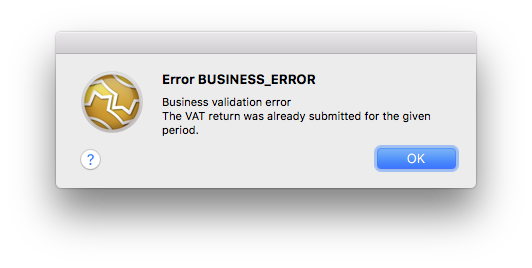

MoneyWorks Manual
Submitting your VAT
To submit your VAT:
- Review the VAT information displayed in the MoneyWorks VAT tab of the Connect window
This is the information that will be sent HMRC and is based on your last finalised VAT return.
- If the VAT information is correct, click the Submit button
You will be asked for confirmation:

Warning: When you submit a VAT return electronically you are making a legal declaration. Clicking Agree & Submit_ confirms your acceptance of this.
Note that MoneyWorks checks that its cycle end date is the same as that expected by HMRC. If it isn't the following alert will display. You will need to decide what to do (if you submit, it will use the period from HMRC, not that from MoneyWorks). As an example, you will get this alert if you have forgotten to Finalise your VAT report since you last submitted.

If the submission is accepted, an alert will be displayed showing the HMRC response code (ID) and the reference number (sequencenumber) of the associated transaction created in MoneyWorks if any (you can view this transaction in Entered Today).

If you get an alert saying "Possible Submission Error", as shown below, this does not necessarily mean that the submission has failed, but that the HMRC system failed to return a proper ID.

In principle this should never happen, but in practice it does. You should login to the HMRC website and check that the submission is there (in all recorded instances of this message, the submission has been successful). MoneyWorks will not make a transaction for this return in this instance, so if you want a transaction you will need to manually enter it.
Note that, when an ID is returned, it is stamped on the transaction should you need it:

The successful submission is also recorded in the MoneyWorks Log file (Show>Log File).
The submission might be rejected. In this case an alert will be displayed showing the reason that HMRC gave for the rejection.

Fixing the VAT information
If the VAT information displayed is incorrect, you will need to fix it before submitting the return. You need to locate the incorrect transactions and cancel and re-enter them, or enter any transactions that are missing. In principle you should have done this before finalising your VAT Report, however we all make mistakes!
Because your VAT Report has been finalised, you will need to do a bit of additional work to get these corrections included in your VAT Submission. Basically, having entered and checked and posted the corrections:
- Set the VAT Cycle end date in MoneyWorks back to end date of the last finalisation (it will have been incremented as part of the finalisation process).
This is done in Edit>Document Preferences>VAT, where you reset the value of the Next cycle ends on date.
- Rerun the VAT report.
This picks up all posted transactions that have not been previously processed for VAT and which are dated on or before the cycle end date. In other words it should contain just your corrections.
- When you are satisfied this is correct, finalise the VAT Report.
- Now re-run the VAT Report, and this time click the Load Old option, highlight the two (or more, if you have been really having a bad day) most recent reports and click Use.
- To amalgamate these individual reports into a single return, turn on the Use Reprint Figures for Guide Form option, then print or preview the report.
This will be a combined report that amalgamates the data in the highlighted reports.
- If you now go back to HMRC Connect, or preview the VAT Guide, you should see the revised figures.
For more information on combining VAT Reports see Reprinting a VAT Report